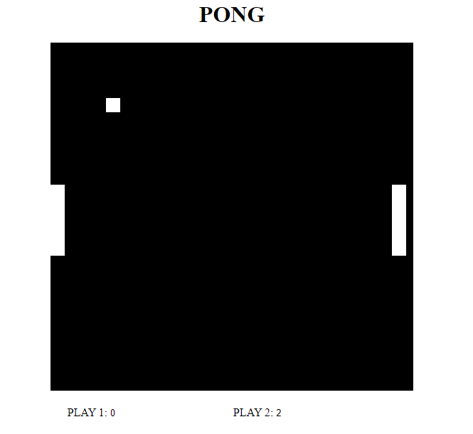
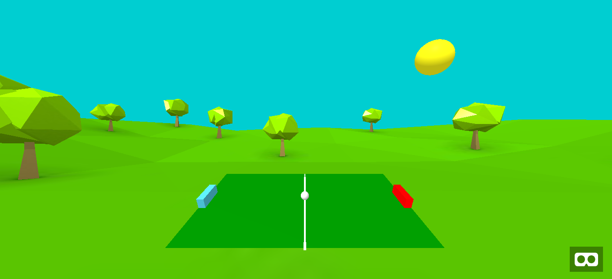
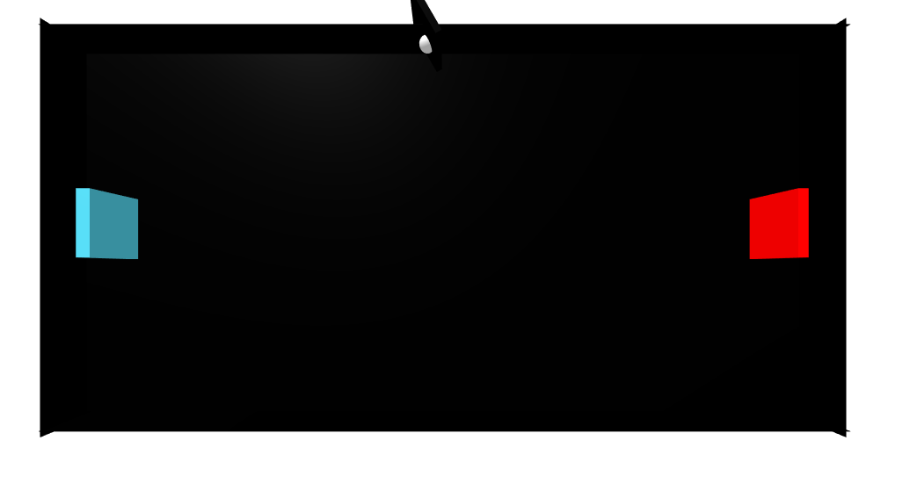
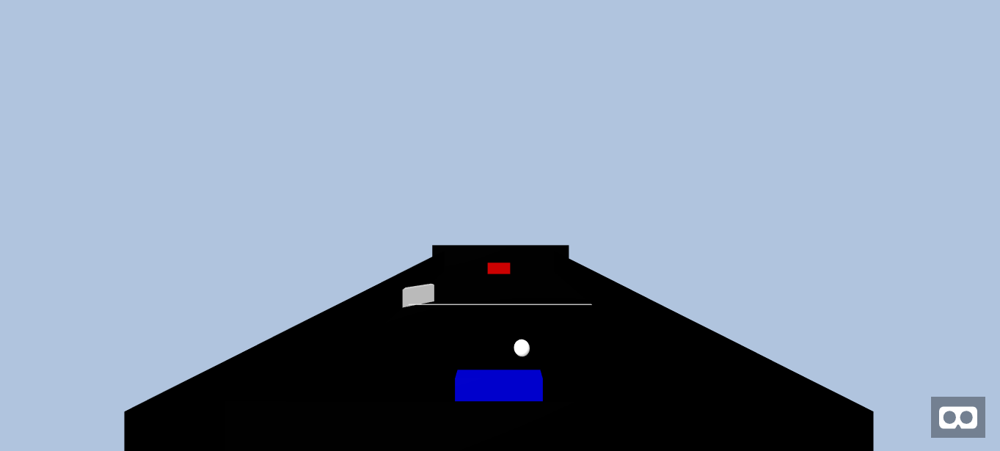

Os jogos abaixo foram desenvolvidos para a disciplina de Computação Gráfica
do CEFET-MG de Timóteo pelos alunos Denis e Wendel
Jogo pong Clássico feito com OpenGL
Cenario em 3D do pong feito com OpenGL
Cenario em 3D do pong feito com A-Frame
Jogo Pong em 3D do pong feito com A-Frame
